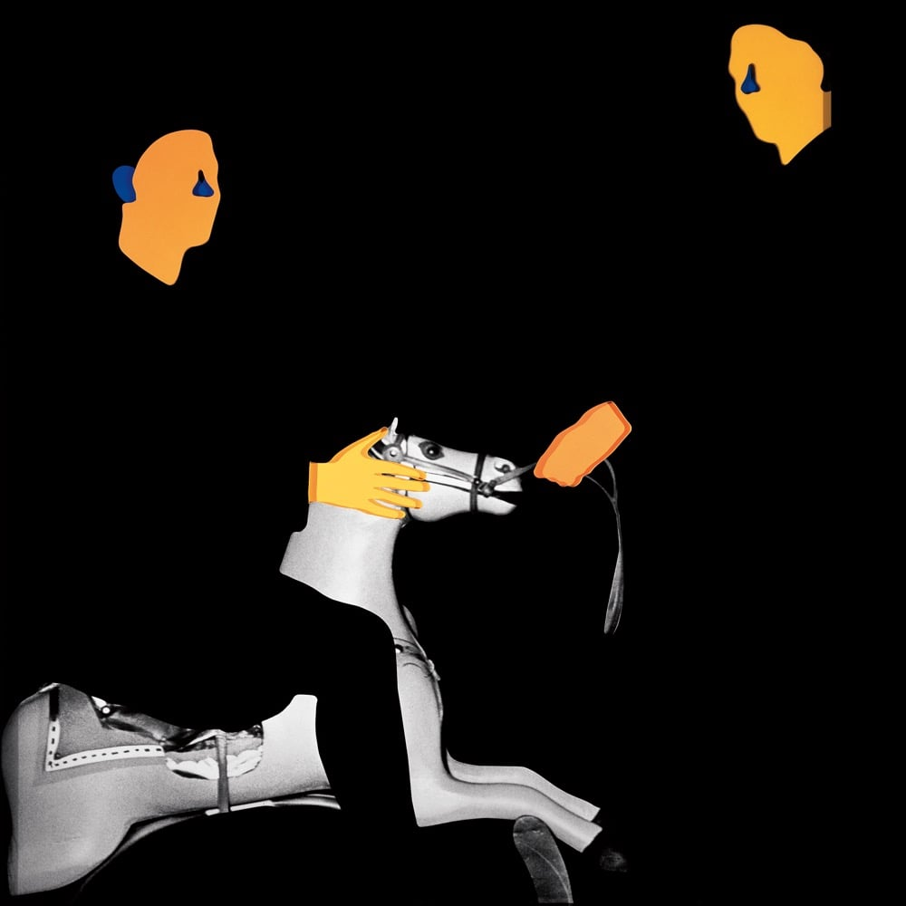

Jan. 4, 2025
I don’t know very much about MGMT these days. I haven’t read any interviews about their albums. The video to the single “Nothing to Declare” was brought to my attention by the YouTube channel Justin Hawkins Rides Again. In it he points out how melodically interesting the song is. To be honest I was more than a little bit in love with the video.
After that I added the album to my library and heard a few more singles in the run up to the release of the album, including “Bubblegum Dog” and “Mother Nature”. The album itself is crammed with similarly interesting songs and has a circular structure, beginning with part 2 of the title track. I’d love to know what poem is being read or sampled or cut up on “Loss of Life, Pt. 2”. Other highlights include “Phradie’s Song” and a song called “Nothing Changes” which goes a bot bonkers in the second half, completely undermining the title of the song!
So the reason I have included this album on my list is that I listened to it a ton, I really like all the songs, and I think it’s one of the best albums I have listened to this year!

Because I’ve loved so many albums this year, after each review I am going to include a couple of pointers to additional albums that you might enjoy if you like the album in the main review. This is not me showing off (well, not much), but rather giving credit to the many excellent albums released this year!
This is a fine album by Tom Skinner, Jonny Greenwood and Thom Yorke. The title track is a rhythmically interesting ballad, “Friend of a Friend” is just a gorgeous wistful song (a good one to use as your morning bell), and the penultimate track “Bending Hectic” is a tour de force of going all wibbly wobbly with guitars.
They also released a second album “Cutouts” this year, which is as B-sidey as its title suggests. I think the better material is on “Wall of Eyes” but you could definitely make a very nice playlist with both albums shuffled together. Of course, I’m very sore about missing out on the lovely vinyl slipcase for both albums from Rough Trade. Now over £100 on discogs! Oh well.
Apple Music launched a discovery station a while back and one Sunday we sat and listened to its recommendations. A stand-out track was “Any Other Way” by Coco. They are a three-piece band from California and they released this album “2” in March 2024. What’s nice about this album is that all three band members appear to sing lead vocals at least once. The songs themselves cover a nice variety of moods, though everything is pretty chilled out. I will be keeping an eye on their bandcamp for more material.